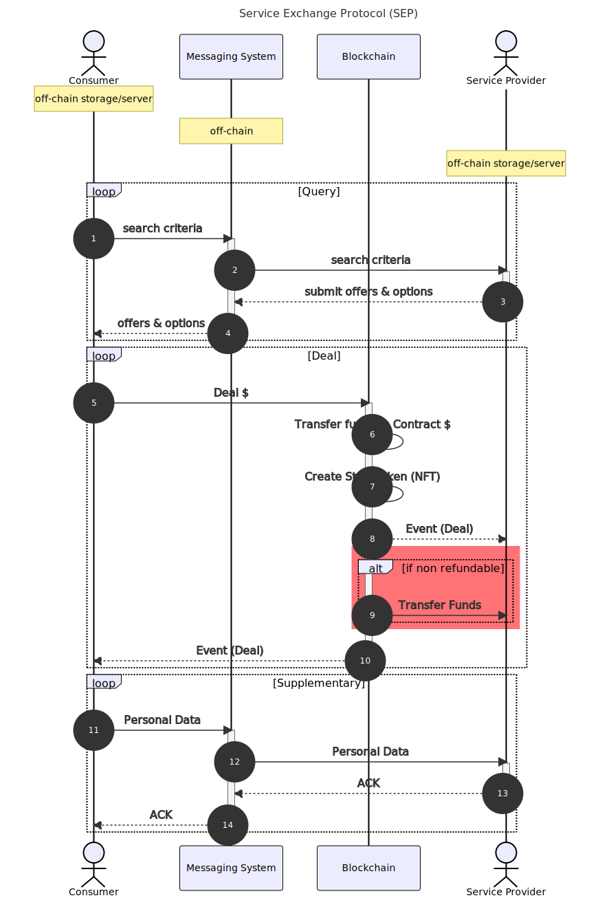

Introduction
Hello and welcome to the Service Exchange Protocol (SEP) - bringing transparency to service marketplaces.
SEP aims to enable developers to build blockchain secured, consumer anonymous, peer-to-peer service marketplaces for the following structures:
- Service delivery at a fixed address (e.g. a hotel or barber)
- Service delivery between two or more known, fixed addresses (e.g. trains or flights)
- Service delivery between two or more random addresses (e.g. ride-hailing or food delivery)
Getting started
Quick-start
When running the proof of concept, there are three features that need to be run simultaneously: the blockchain node, the real-world service provider, and the consumer.
Hardhat node
Clone the sep-contracts repository:
git clone https://github.com/rndlabs/sep-contracts
Install the dependencies:
cd sep-contracts
yarn
Compile typechain artifacts:
yarn hardhat compile
Generate a mnemonic that you can use for test accounts. To do so, you can use this BIP39 generator. At the Mnemonic Code Converter:
- Select ‘24’ words from the drop-down box.
- Press ‘GENERATE’
- Copy the results of the
BIP39 Mnemonicfield to clipboard for the next step.
Configure the environment variables (.env), within the cloned repository’s root directory to be similar to:
# network specific node uri : `"ETH_NODE_URI_" + networkName.toUpperCase()`
ETH_NODE_URI_MAINNET=https://eth-mainnet.alchemyapi.io/v2/<apiKey>
ETH_NODE_URI_SOKOL=https://sokol.poa.network
ETH_NODE_URI_GNOSIS=https://rpc.xdaichain.com
# generic node uri (if no specific found) :
ETH_NODE_URI=https://{{networkName}}.infura.io/v3/<apiKey>
# network specific mnemonic : `"MNEMONIC_ " + networkName.toUpperCase()`
# MNEMONIC_MAINNET=<mnemonic for mainnet>
# generic mnemonic (if no specific found):
MNEMONIC=<paste your mnemonic here with greater than/less than symbols>
# forking
# HARDHAT_FORK=gnosis
# coinmarketcap api key for gas report
COINMARKETCAP_API_KEY=
REPORT_GAS=true
# Etherscan API key for automatic verification of contracts
ETHERSCAN_API_KEY=
Now start the hardhat local blockchain for testing:
yarn hardhat node
When starting the hardhat local node, search through the console output for the address at which the ServiceProvider contract was deployed. Example:
deploying "ServiceProvider" (tx: 0x717c1eb6649abe7b92a0a2bead9b9f3b505da385980486283e5912ac90d699a9)...: deployed at 0x29b67856f9ca63dF5E688454B17F70Afd5071aa0 with 1758370 gas
In the above example, the ServiceProvider contract was deployed to 0x29b67856f9ca63dF5E688454B17F70Afd5071aa0. Copy the address where it deployed on your local hardhat node as this will be used in subsequent configuration. For now though, your local blockchain node is running and ready to accept connections!
Server
Open another terminal window and clone the sep repository.
Be sure not to clone
sepinto thesep-contractsdirectory.
git clone https://github.com/rndlabs/sep
Install the dependencies:
yarn # installs lerna for monorepo
yarn lerna bootstrap # bootstrap packages
Change to the demo directory:
cd packages/demo
Generate the protobuf TypeScript:
yarn protoc --ts_out ./src/proto --proto_path ./src/proto ./src/proto/*
Copy over the typechain artifacts from the sep-contracts repo:
cp -pR path/to/sep-contracts/typechain .
Configure the environment varibles (.env) in the demo directory to be similar to:
MNEMONIC=<paste your mnemonic from before here with greater than/less than symbols>
SERVER_KEY_INDEX=1
CLIENT_KEY_INDEX=2
RPC_URL=http://127.0.0.1:8545
SEP_DAPP_NAME=sep-movi
SEP_DAPP_VERSION=1
REGISTRY_ADDRESS=<fill in with deployment address from sep-contracts>
SELLER_NAME=Testing Seller
SELLER_DATA_URI=http://testurl/
SELLER_LOCATION=u173z
Now, you can start the server, and this will simulate being a service provider:
yarn ts-node ./src/server.ts
At this point, you should see the following activity:
- The
serverregisters a testseller. - The
serverregisters 5spaces for thesellerHashfrom (1). - The
serverconnects toWakuto monitor applicablecontent-topics.
This activity will be visible on the node as well as on the server.
Client
Open another terminal window and change into the demo package’s directory:
cd path/to/demo
All the configuration for the client has already been done from the previous steps, so we can now run the client to make a query for a ride:
yarn ts-node ./src/client.ts
At this point, you should see the following activity:
- The
clientconnects toWakuand asks (ping) for allsellerHashin a certain shard. - The
serverresponds (pong)with it’ssellerHashand some additional details. - The
clientverifies the pong from theserveragainst theServiceProvidercontract. - The
client, knowing there is a legitimateseller, asks for a stay with specific parameters (check-in, check-out, number of adults, number of children, number of spaces). - The
serverreceives the query from (4) and dispatches this to anauctioneerthat takes theaskparameters as input. It’s then determined if thesellerwants to make abidfor this business. - The
servercrafts a signed bid toclient. - The
clientverifies theserver’s bid, and chooses one of the offers. - The
clientuses the bid’ssignatureto make the deal on-chain. - The
server, through event monitoring, can see that theclienthas made the deal. 🥳
Sometimes there are connectivity issues to
Wakufrom theclient. UseCtrl + Cto terminate theclientand start it again.
Overview
This specification describes how real-world service providers and consumers interact using the Service Exchange Protocol to effect an exchange of a service.
This allows any service provider to create an industry-specific marketplace on which to advertise their inventory in a permissionless, decentralised manner.
Design requirements
- Anonymity: Consumers who are searching for inventory should not have any identifying information conveyed to the service provider.
- Transparency: All actors bearing witness to the exchange must be able to see clearly the terms by which services are exchanged.
- Data ownership: Service providers must be able to completely control their inventory. This control may be delegated.
- Decentralised: The protocol must be permissionless, relying on no centralised infrastructure.
Rationale
- Anonymity as protection against an adversarial business targetting users with aggressive pricing strategies.
- Transparency allowing all in the marketplace to see the prices being offered and settled (akin to an L2 orderbook).
- Data ownership to prevent vendor lock-in and subsequent rent extraction techniques.
Terminology
Line refers to an industry that has an implementation.
Service provider refers to an entity providing an intangible act for which another party is willing to pay for.
Consumer refers to the party purchasing the intangible act.
Stub represents a service owed by the service provider to the consumer subject to terms.
Messaging system refers to the chosen protocol on which the service provider and consumer have agreed to communicate.
Personally identifiable information (PII) refers to any piece of data that can be used to uniquely identify a user. For example, the signature verification key, and the hash of one’s static IP address are unique for each user and hence count as PII.
User stories
- Search for providers by location.
- Search for services by location matching specified parameters.
Process
Sequence Diagram

Verification
Messages exchanged and data stored are verified using an on-chain registry of valid service providers. This registry provides:
- Role-based authentication to verify signers for the service-provider.
- Document timestamping for data storage.
Primitives
Data types
serviceProvider.id: a hash of a salt, and _msgSender().
serviceProvider.idis deterministic and thus requires hash collision protection.
item.id: a hash of serviceProvider.id and name of the item.
term.id: a hash of serviceProvider.id and name of the term.
The end-user facing explanation of what an
itemortermcorresponds to is handled by theServiceProviderDataprotobuf. TheURIto find this protobuf is located in theServiceProviderRegistryunder the service provider. Definition of the descriptors is outside of scope for Videre, and is the job of the industry implementation.
Components
Each of the SEP components rely on other protocols and systems, yet it is designed to be protocol and system agnostic. That is by design, yet in practice there aren’t many protocols and systems to pick that fulfil the design requirements, as most of them have only come into existance in the past few years.
The current three components and the systems used for each are:
It is important to understand that the only on-chain component is the Execution, the rest is off-chain.
Messaging
The protocol is designed to be messaging system agnostic. For the quick-start and proof-of-concept implementations, the messaging system used is waku. waku fulfills the design requirement for anonymous, decentralised messaging. In order to meet the design transparency design requirements, no attempts are made to obfuscate / encrypt data. Authenticity is asserted using payload signatures verified against a blockchain registry.
Content Topics
All clients communicating on the SEP do so on known waku contentTopics. The specification for a contentTopic in SEP covers:
whichreal-world industry the service is conducted in (eg. movi) for accommodation.- A protocol
versionnumber to allow for graceful handling of protocol upgrades. whatthe specific component for the API is (eg.ping).wherethis interaction is taking place, defined by the industry implementation. For example,movielects to implement this as anh3Index, whereas aviation may elect for this to be a bytes string such asJKF-LHR.howthe protocol is encoded, ie.protofor protobuf.
A complete example:
/sep/movi/1/ping/8928308280fffff/proto
which = movi
version = 1
what = ping
where = 8928308280fffff
how = proto
Messages
Discovery
Content topics ‘what’: ping, pong
message Ping {
// timestamp when this ping was sent.
google.protobuf.Timestamp timestamp = 1;
}
message Pong {
// primitive serviceProvider.id
bytes serviceProvider = 1;
// the location where the services are provided - specified by the industry implementation
bytes loc = 2;
// timestamp when the pong was sent.
google.protobuf.Timestamp timestamp = 3;
// signature of a bidder signer for the service provider, verifiable on-chain
bytes signature = 4;
}
DO NOT ASSUME THAT TIMESTAMPS SENT VIA THE PROTOCOL ARE TRUSTWORTHY.
Bid / Ask (Generic)
Content topics ‘what’: bid, ask
message AskWrapper {
// random salt used to target bid
bytes salt = 1;
// the payload (ask) from the consumer to the service providers
bytes payload = 2;
}
message BidWrapper {
// primitive serviceProvider.id
bytes serviceProvider = 1;
// keccak(AskWrapper.salt & AskWrapper.payload) for response filtering
bytes askDigest = 2;
// the payload (bid) from the service provider to the consumer
bytes payload = 3;
// bidder signs hash of fields (1,2,3)
bytes signature = 4;
}
message BidTerm {
// primitive term.id - terms by which the service is subject to
bytes term = 1;
// the contract address implementing ITerm
bytes impl = 2;
// abi encoded payload that may be passed to a contract implementing ITerm
optional bytes txPayload = 3;
}
// an optional item is an item that comes with an additional cost
message BidOptionItem {
bytes item = 1;
repeated videre.type.ERC20Native cost = 2;
// bidder signs hash of fields (1, 2, askDigest)
bytes signature = 3;
}
// an optional term is a term that comes with an additional cost
message BidOptionTerm {
BidTerm term = 1;
repeated videre.type.ERC20Native cost = 2;
// bidder signs hash of fields (1, 2, askDigest)
bytes signature = 3;
}
message BidOptions {
// optional items and/or terms that may be purchased
repeated BidOptionItem items = 1;
repeated BidOptionTerm terms = 2;
}
message BidLine {
// the item(s) offered in a bundled state, ie. space + breakfast
repeated bytes items = 1;
// the term(s) offered in a bundled state, ie. fully flexible + no cancellation
repeated BidTerm terms = 2;
// the option(s) offered, ie. add breakfast, add fully-flexible
BidOptions options = 3;
// the maximum number of times this bid authorisation can be used
uint32 limit = 4;
// the latest timestamp at which this bid is valid
uint32 expiry = 5;
// the cost in specified tokens or native unit of account
// TODO: expand to detailed cost structure
repeated videre.type.ERC20Native cost = 6; // include the capabilities for negative costs
// bidder signs hash (AskWrapper.salt, limit, expiry, serviceProvider (which), askDigest (params), items, terms, options, cost)
bytes signature = 7;
}
message Bids {
// bids that match the ask
repeated BidLine bids = 1;
}
AskWrapper.payloadis defined asbytesto allow a generic, industry-agnostic bid / ask protocol to be defined. Specific ask parameters are defined in industry-specific protocol implementations of Videre.
BidWrapper.payloadis defined asbytesfor possible future expansion to industry-specific bid replies.
movi (Ride-hailing implementation)
The quick-start / reference implementation for SEP is targetted at ride-hailing. Here we define the ask parameters used by consumers.
SEP
- Content-topic
whereandlocreply: Formovi, this is implemented as anh3Index.
Messages
message moviAsk {
// the date of check-in for the stay
google.type.Date checkIn = 1;
// the date of check-out for the stay
google.type.Date checkOut = 2;
// the number of adults staying
uint32 numPaxAdult = 3;
// the number of children staying
optional uint32 numPaxChild = 4;
// the number of spaces (rooms)
uint32 numSpacesReq = 5;
}
Storage
The protocol is designed to be storage system agnostic. For the quick-start and proof-of-concept implementations, the data storge system used is swarm. Swarm meets the design requirements of decentralised and data ownership.
Generic Payloads
Service Provider Info / Items / Terms
The initial design is for service provider data to be stored monolithically, excluding images. The payloads are generic in nature, with payloads designed to be extended by industry-specific implementations.
Each payload is placed in a SignedPayloadWrapper, with an authorised API signer having signed a hash of the payload which is subsequently placed in SignedPayloadWrapper.signature. This provides
message ServiceItemData {
// primitive item.id
bytes item = 1;
// industry-specific payload describing item
bytes payload = 2;
}
message ServiceTermData {
// primitive term.id
bytes term = 1;
// industry-specific payload describing term
bytes payload = 2;
// smart contract address that implements ITerm interface
string implementation = 3;
}
message ServiceProviderData {
// primitive serviceProvider.id
bytes serviceProvider = 1;
// services (items) provided by this service provider
repeated ServiceItemData items = 2;
// terms that may be applicable to services provided
repeated ServiceTermData terms = 3;
// industry-specific payload describing service provider
bytes payload = 4;
// signed hash by ServiceProvider `api` signer
bytes signature = 5;
}
movi Payloads
Driver Profile
// ServiceProviderData.payload
message Driver {
// name of driver
// vehicle description
// phone number
// profile picture
// connectivity in vehicle
}
Rider Profile
// BuyerData.payload
message Rider {
// name of rider
// phone number
// profile picture
}
Execution
Registries
There is a need for a source of truth as to what can be trusted in SEP. The registries broadly cover the areas of:
For initial development phase of SEP, addresses will require whitelisting so that they may register a service provider with smart-contract enforced sunset clause for the whitelisting of 180 days (ie. after which anyone may register).
Reputation based scoring / assessment is OUTSIDE OF SCOPE for the initial development phase of SEP. During this phase, the SEP will NOT support terms that allow for the transfer of funds to service providers without intervention / consent of the consumer. Reputation base scoring / dispute settlement is targetted to be implemented after the cessation of the whitelist timeframe.
Lines (Industries)
This registry provides a canonical source for line-specific state transition contracts that allow for the issuance of stubs, and subsequent state changes.
The registry shall contain a bytes32 to address mapping for the industry-specific code (eg. “movi”) to the implementing contract. The registry shall also contain a mapping of industry to service provider to uint256. This is to be interpreted as a can, essentially indcating that the service provider providers a service in the specific industry, and the industry-specific terms they agree to are governed by the implementation.
Protocol fees for the specific industry are stored within this contract.
It is a requirement that the service provider has agreed to the industry-specific terms / life-cycle. If they cease to agree, and exit the industry, no NEW stub issuance may take place, but old stubs and their terms remain effective.
The above method opens up the possibility to have sub-industry, or locale specific industry implementations, such as movi-JP for accommodation providers in Japan.
Service Providers
The service provider registry allows consumers to:
- Find where to get industry-specific information about the service provider.
- Determine who is authorised to act in what role on behalf of the service provider.
- Determine when an authorised party was authorised, and if their authorisation is revoked, when it was revoked.
Document Timestamps
Service providers store their information offline, saving on costly gas and allowing the system to remain storage system agnostic. In doing so, there is a need to determine the time at which a specific document was published.
The document timestamp registry allows actors on the protocol to:
- Determine the time at which a document was created.
Proof of ownership of the document is outside the scope of the timestamp registry.
Accounting
Accounting of funds is handled by a centralised accounting contract, similar to the vat system as used in MakerDAO. The actual funds are held by joiner contracts. This allows for the system to limit the types of collateral / tokens that may be used to pay for stubs. There are three types of accounts that may own collateral managed within the vat:
- Service Providers (
bytes32) - Stubs (
bytes32) - Ethereum addresses (
address)
Funds are specified in mappings such that:
- For
bytes32accounts:mapping (bytes32 => mapping (address => uint256)) - For
addressaccounts:mapping (address => mapping (address => uint256))
The zero address token MAY be implemented and represent the deployment chain’s native unit of account.
As stubs may be resold on secondary markets, any collateral attached to them should move simultaneously, therefore the stub represents an account itself.
Ownership of stubs is handled through a stub to address mapping:
mapping (bytes32 => address)
Similar to MakerDAO’s vat, root administrative contracts can be attached to the vat to allow custom movement of funds / stub ownership. This allows for future use cases such as a ProxyContract that implements zk ownership of a stub.
Industrial lines (such as stays) will have an account within the vat. This account will be an ethereum address corresponding to the contract’s deployment address. This allows for the system to accrue protocol fees, and to account for these fees on a per industry basis, allowing the case of different protocol fees depending on an industry.
Stubs
When a service provider and consumer come to an agreement, they make a deal. The result of this deal is a stub (voucher) that represents a future service to be delivered by the service provider to the consumer. This future service (items) is subject to terms and carries a specified cost. It is the role of the line (industry) contract to implement rules defining the lifecycle of their issued stubs.
Items
An item array, in the primitive sense.
Terms
A term is a business logic primitive for Videre, and may be called by either party, depending on the term. For example there may be a NO_REFUND_AFTER_CHECKIN term where upon the consumer checks into the accommodation facility, the service provider may call the term to have the whole balance of funds transferred to themselves.
Another example may be a 48HR_RAINCHECK by which the stub may be fully refundable. The consumer could then call the term which would refund their payment provided the conditions were met.
Careful consideration should be given to terms and the privacy implications that they may have.
Utility
These are contracts that help with usability / specific cases.
NFT Wrapper
A stub holder can transfer their stub to the NFTWrapper which then subsequently becomes the owner of the stub in the vat, though the respective NFT tokenId that is issued is minted to the stub holder.
The wrapper would contain a tokenId to stub mapping, and tokenId to owner mapping. This wrapper should also proxy the ILifeCycle interface so that calls can just be forwarded directly from the token owner to the industry-specific life-cycle implementation.
Unresolved_Issues
- Prevent a driver from renouncing a bidder / API key to void offers / existing confirmations Allow setting of global response options (ie. not just per bidline options)
- Implement timestamp for granting of granting and revocation of roles. use
struct Timestamps { uint128 granted; uint128 revoked; }